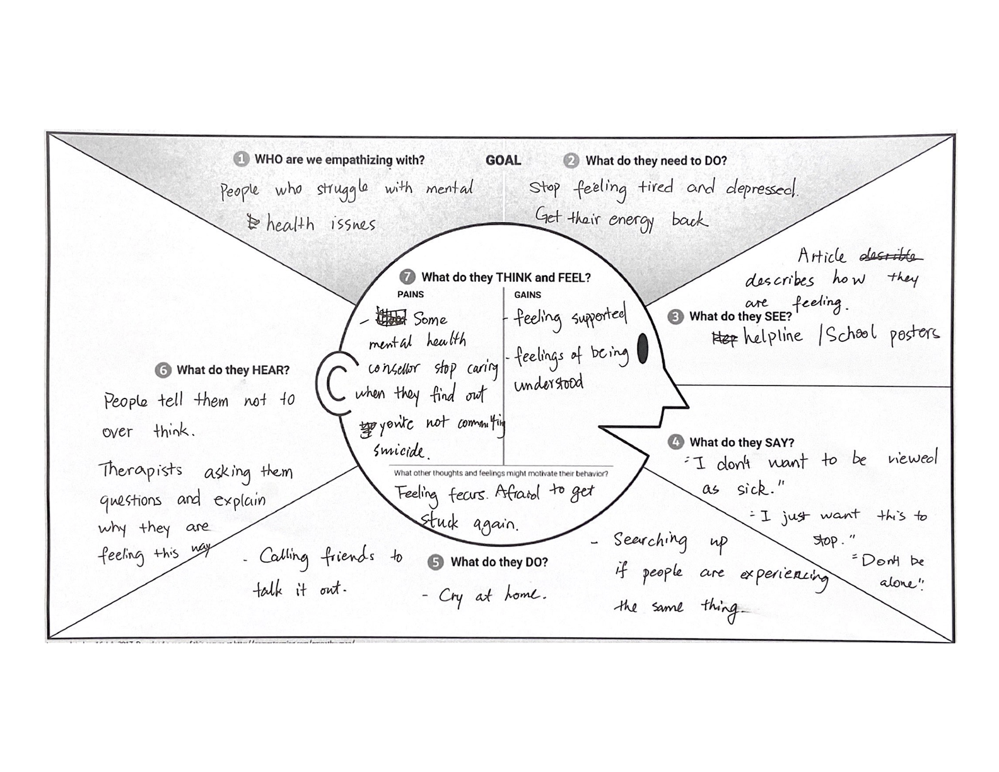

Emphathy Map
Step 1: Establish focus and goals
- Who is the person for the map?
- What is the design outcome?
Step 2: Capture the outside world
- The Says quadrant contains what the user says out loud in an interview or some other usability study. Ideally, it contains verbatim and direct quotes from research.
- The Thinks quadrant captures what the user is thinking throughout the experience.
- The Does quadrant encloses the actions the user takes.
- The Feels quadrant is the user’s emotional state, often represented as an adjective plus a short sentence for context
Why don't we create one now!
Get the template
This is the one I did!

Additional resources:
Empathy Mapping: The First Step in Design Thinking
Empathy Mapping: A Guide to Getting Inside a User’s Head